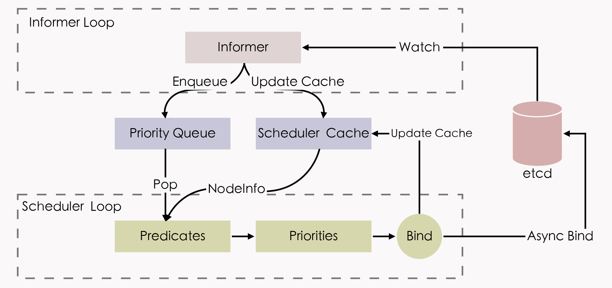
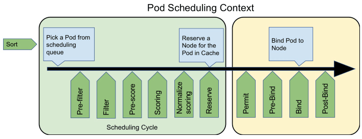

- 00 _导读 _ 什么是“The Fenix Project”？.md.html
- 00 开篇词 _ 如何构建一个可靠的分布式系统？.md.html
- 01 _ 原始分布式时代：Unix设计哲学下的服务探索.md.html
- 02 _ 单体系统时代：应用最广泛的架构风格.md.html
- 03 _ SOA时代：成功理论与失败实践.md.html
- 04 _ 微服务时代：SOA的革命者.md.html
- 05 _ 后微服务时代：跨越软件与硬件之间的界限.md.html
- 06 _ 无服务时代：“不分布式”云端系统的起点.md.html
- 07 _ 远程服务调用（上）：从本地方法到远程方法的桥梁.md.html
- 08 _ 远程服务调用（下）：如何选择适合自己的RPC框架？.md.html
- 09 _ RESTful服务（上）：从面向过程编程到面向资源编程.md.html
- 10 _ RESTful服务（下）：如何评价服务是否RESTful？.md.html
- 11 _ 本地事务如何实现原子性和持久性？.md.html
- 12 _ 本地事务如何实现隔离性？.md.html
- 13 _ 全局事务和共享事务是如何实现的？.md.html
- 14 _ 分布式事务之可靠消息队列.md.html
- 15 _ 分布式事务之TCC与SAGA.md.html
- 16 _ 域名解析系统，优化HTTP性能的第一步.md.html
- 17 _ 客户端缓存是如何帮助服务器分担流量的？.md.html
- 18 _ 传输链路，优化HTTP传输速度的小技巧.md.html
- 19 _ 如何利用内容分发网络来提高网络性能？.md.html
- 20 _ 常见的四层负载均衡的工作模式是怎样的？.md.html
- 21 _ 服务端缓存的三种属性.md.html
- 22 _ 分布式缓存如何与本地缓存配合，提高系统性能？.md.html
- 23 _ 认证：系统如何正确分辨操作用户的真实身份？.md.html
- 24 _ 授权（上）：系统如何确保授权的过程可靠？.md.html
- 25 _ 授权（下）：系统如何确保授权的结果可控？.md.html
- 26 _ 凭证：系统如何保证与用户之间的承诺是准确完整且不可抵赖的？.md.html
- 27 _ 保密：系统如何保证敏感数据无法被内外部人员窃取滥用？.md.html
- 28 _ 传输（上）：传输安全的基础，摘要、加密与签名.md.html
- 29 _ 传输（下）：数字证书与传输安全层.md.html
- 30 _ 验证：系统如何确保提交给服务的数据是安全的？.md.html
- 31 _ 分布式共识（上）：想用好分布式框架，先学会Paxos算法吧.md.html
- 32 _ 分布式共识（下）：Multi Paxos、Raft与Gossip，分布式领域的基石.md.html
- 33 _ 服务发现如何做到持续维护服务地址在动态运维中的时效性？.md.html
- 34 _ 路由凭什么作为微服务网关的基础职能？.md.html
- 35 _ 如何在客户端实现服务的负载均衡？.md.html
- 36 _ 面对程序故障，我们该做些什么？.md.html
- 37 _ 要实现某种容错策略，我们该怎么做？.md.html
- 38 _ 限流的目标与模式.md.html
- 39 _ 如何构建零信任网络安全？.md.html
- 40 _ 如何实现零信任网络下安全的服务访问？.md.html
- 41 _ 分布式架构中的可观测到底说的是什么？.md.html
- 42 _ 分析日志真的没那么简单.md.html
- 43 _ 一个完整的分布式追踪系统是什么样子的？.md.html
- 44 _ 聚合度量能给我们解决什么问题？.md.html
- 45 _ 模块导学：从微服务到云原生.md.html
- 46 _ 容器的崛起（上）：文件、访问、资源的隔离.md.html
- 47 _ 容器的崛起（下）：系统、应用、集群的封装.md.html
- 48 _ 以容器构建系统（上）：隔离与协作.md.html
- 49 _ 以容器构建系统（下）：韧性与弹性.md.html
- 50 _ 应用为中心的封装（上）：Kustomize与Helm.md.html
- 51 _ 应用为中心的封装（下）：Operator与OAM.md.html
- 52 _ Linux网络虚拟化（上）：信息是如何通过网络传输被另一个程序接收到的？.md.html
- 53 _ Linux网络虚拟化（下）：Docker所提供的容器通讯方案有哪些？.md.html
- 54 _ 容器网络与生态：与CNM竞争过后的CNI下的网络插件生态.md.html
- 55 _ 谈谈Kubernetes的存储设计理念.md.html
- 56 _ Kubernetes存储扩展架构：一个真实的存储系统如何接入或移除新存储设备？.md.html
- 57 _ Kubernetes存储生态系统：几种有代表性的CSI存储插件的实现.md.html
- 58 _ Kubernetes的资源模型与调度器设计.md.html
- 59 _ 透明通讯的涅槃（上）：通讯的成本.md.html
- 60 _ 透明通讯的涅槃（下）：控制平面与数据平面.md.html
- 61 _ 服务网格与生态：聊聊服务网格的两项标准规范.md.html
- 62 _ Fenix's Bookstore的前端工程.md.html
- 63 _ 基于Spring Boot的单体架构.md.html
- 64 _ 基于Spring Cloud的微服务架构.md.html
- 65 _ 基于Kubernetes的微服务架构.md.html
- 66 _ 基于Istio的服务网格架构.md.html
- 67 _ 基于云计算的无服务架构.md.html
- 春节特别放送（上）_ 有的放矢，事半功倍.md.html
- 春节特别放送（下）_ 积累沉淀，知行合一.md.html
- 用户故事 _ 詹应达：持续成长，不惧未来.md.html
- 结束语 _ 程序员之路.md.html
- 结课测试 _ 一套习题，测出你的掌握程度.md.html
- 捐赠
58 _ Kubernetes的资源模型与调度器设计
你好，我是周志明。
调度是容器编排系统最核心的功能之一，“编排”这个词本来也包含了“调度”的含义。调度是指为新创建出来的Pod，寻找到一个最恰当的宿主机节点来运行它，而这个过程成功与否、结果恰当与否，关键就取决于容器编排系统是怎么管理和分配集群节点的资源的。
那么这样一来，我们就可以认为，调度必须要以容器编排系统的资源管控为前提。
因此这节课，我们就从Kubernetes的资源模型谈起，来学习下Kubernetes是如何为一个新创建出来的Pod，寻找到一个最恰当的宿主机节点来运行的。
资源模型
在开始之前，我们先来理清一个概念：资源是什么。
在Kubernetes中，资源是非常常用的术语，从广义上来讲，Kubernetes系统中所有你能接触的方方面面，都被抽象成了资源，比如表示工作负荷的资源（Pod、ReplicaSet、Service、……），表示存储的资源（Volume、PersistentVolume、Secret、……），表示策略的资源（SecurityContext、ResourceQuota、LimitRange、……），表示身份的资源（ServiceAccount、Role、ClusterRole、……），等等。
事实上，“一切皆为资源”的设计也是Kubernetes能够顺利施行声明式API的必要前提。Kubernetes以资源为载体，建立了一套同时囊括了抽象元素（如策略、依赖、权限）和物理元素（如软件、硬件、网络）的领域特定语言。它通过不同层级间资源的使用关系，来描述上至整个集群甚至是集群联邦，下至某一块内存区域或者一小部分的处理器核心的状态，这些对资源状态的描述的集合，就共同构成了一幅信息系统工作运行的全景图。
在第48讲“以容器构建系统”里，我第一次提到了Kubernetes的资源模型，把它跟控制器模式一并列为了Kubernetes中最重要的两个设计思想。当然在这节课中，我们还会再次讨论资源模型，但是这里所说的主要是狭义上的物理资源，即特指排除了广义的那些逻辑上的抽象资源，只包括能够与真实物理底层硬件对应起来的资源，比如处理器资源、内存资源、磁盘存储资源，等等。
另外需要说明的是，因为咱们今天讨论的话题是调度，而作为调度最基本单位的Pod，只会与这些和物理硬件直接相关的资源产生供需关系，所以后面我提到的资源，如果没有额外说明的话，就都是特指狭义上的物理资源。
OK，现在我们说回到Kubernetes的资源模型上来。
首先，从编排系统的角度来看，Node是资源的提供者，Pod是资源的使用者，而调度是将两者进行恰当的撮合。
那么Kubernetes具体是如何撮合它们俩的呢？别着急，我们先从Node开始来了解。
Node通常能够提供三方面的资源：计算资源（如处理器、图形处理器、内存）、存储资源（如磁盘容量、不同类型的介质）和网络资源（如带宽、网络地址）。其中与调度关系最密切的是处理器和内存，虽然它们都属于计算资源，但两者在调度时又有一些微妙的差别：
- 处理器这样的资源，被叫做是可压缩资源（Compressible Resources），特点是当可压缩资源不足时，Pod只会处于“饥饿状态”，运行变慢，但不会被系统杀死，也就是容器会被直接终止，或者是被要求限时退出。
- 而像内存这样的资源，则被叫做是不可压缩资源（Incompressible Resources），特点是当不可压缩资源不足，或者超过了容器自己声明的最大限度时，Pod就会因为内存溢出（Out-Of-Memory，OOM）而被系统直接杀掉。
Kubernetes给处理器资源设定的默认计量单位是“逻辑处理器的个数”。至于具体“一个逻辑处理器”应该如何理解，就要取决于节点的宿主机是如何解释的，它通常会是我们在/proc/cpuinfo中看到的处理器数量。比如，它有可能会是多路处理器系统上的一个处理器、多核处理器中的一个核心、云计算主机上的一个虚拟化处理器（Virtual CPU，vCPU），或者是处理器核心里的一条超线程（Hyper-Threading）。
总之，Kubernetes只负责保证Pod能够使用到“一个处理器”的计算能力，而对不同硬件环境构成的Kubernetes集群，乃至同一个集群中不同硬件的宿主机节点来说，“一个处理器”所代表的真实算力完全有可能是不一样的。
另外在具体设置方面，Kubernetes沿用了云计算中处理器限额设置的一贯做法。如果不明确标注单位，比如直接写0.5，默认单位就是Core，即0.5个处理器；当然也可以明确使用Millcores为单位，比如写成500 m，同样也代表0.5个处理器，因为Kubernetes规定了1 Core = 1000 Millcores。
而对于内存来说，它早已经有了广泛使用的计量单位，即Bytes，如果设置中不明确标注单位，就会默认以Bytes计数。
为了实际设置的方便，Kubernetes还支持以Ei、Pi、Ti、Gi、Mi、Ki，以及E、P、T、G、M、K为单位，这两者略微有一点儿差别。这里我就以Mi和M为例，它们分别是Mebibytes与Megabytes的缩写，前者表示1024×1024 Bytes，后者表示1000×1000 Bytes。
服务质量与优先级
那么到这里，我们要知道设定资源计量单位的目的，是为了管理员能够限制某个Pod对资源的过度占用，避免影响到其他Pod的正常运行。
Pod是由一个到多个容器组成的，资源最终是交由Pod的各个容器去使用，所以资源的需求是设定在容器上的，具体的配置是Pod的spec.containers[].resource.limits/requests.cpu/memory字段。但是，对资源需求的配额则不是针对容器，而是针对Pod整体，Pod的资源配额不需要手动设置，因为Pod的资源配额就是Pod包含的每个容器资源需求的累加值。
实际上，为容器设定最大的资源配额的做法，从cgroups诞生后就已经屡见不鲜了，但不知你有没有注意到，Kubernetes给出的配置中有limits和requests两个设置项？
这两者的区别其实很简单：request是给调度器用的，Kubernetes选择哪个节点运行Pod，只会根据requests的值来进行决策；而limits才是给cgroups用的，Kubernetes在向cgroups的传递资源配额时，会按照limits的值来进行设置。
Kubernetes会采用这样的设计，完全是基于“心理学”的原因，因为Google根据Borg和Omega系统长期运行的实践经验，总结出了一条经验法则：用户提交工作负载时设置的资源配额，并不是容器调度一定必须严格遵守的值，因为根据实际经验，大多数的工作负载运行过程中，真正使用到的资源，其实都远小于它所请求的资源配额。
额外知识：Purchase Quota- Even though we encourage users to purchase no more quota than they need, many users overbuy because it insulates them against future shortages when their application’s user base grows.- 即使我们已经努力建议用户不要过度申请资源配额，但仍难免有大量用户过度消费，他们总希望避免因用户增长而产生资源不足的现象。- —— Large-Scale Cluster Management at Google with Borg，Google
当然，“多多益善”的想法完全符合人类的心理，大家提交的资源需求通常都是按照可能面临的最大压力去估计的，甚至考虑到了未来用户增长所导致的新需求。为了避免服务因资源不足而中断，都会往大了去申请，这点我们可以理解。
但是，如果直接按照申请的资源去分配限额，必然会导致服务器出现两方面的影响：一方面，在大多数时间里服务器都会有大量的硬件资源闲置；而另一方面，这些闲置资源又已经分配出去，有了明确的所有者，不能再被其他人利用，难以真正发挥价值。
不过我们也能想到，Kubernetes不太可能因为把一个资源配额的设置，拆分成了limits和requests两个设置项 ，就能完全解决这个矛盾。所以为此，Kubernetes还进行了许多额外的处理。
比如现在我们知道，一旦选择不按照最保守、最安全的方式去分配资源，就意味着容器编排系统必须要为有可能出现的极端情况买单。而如果允许节点给Pod分配的资源总和，超过了Kubernetes自己最大的可提供资源的话，假如某个时刻，这些Pod的总消耗真的超标了，就会不可避免地导致节点无法继续遵守调度时对Pod许下的资源承诺。
那么此时，Kubernetes就迫不得已要杀掉一部分Pod，以腾出资源来保证其余Pod能正常运行，这个操作就是我后面要给你介绍的驱逐机制（Eviction）。
而要想进行驱逐，首先Kubernetes就必须拿出当资源不足时，该先牺牲哪些Pod、该保留哪些Pod的明确准则，所以由此就形成了Kubernetes的服务质量等级（Quality of Service Level，QoS Level）和优先级（Priority）的概念。
我们先来了解下Kubernetes的服务质量等级的概念。
服务质量等级
质量等级是Pod的一个隐含属性，也是Kubernetes优先保障重要的服务，放弃一些没那么重要的服务的衡量准绳。
那到这里，不知道你有没有想到这样一个细节：如果不去设置limits和requests会怎样？
答案是不设置处理器和内存的资源，就意味着没有上限，该Pod可以使用节点上所有可用的计算资源。不过你先别高兴得太早，这类Pod能以最灵活的方式去使用资源，但也正是这类Pod在扮演着最不稳定的风险来源的角色。
在论文《Large-Scale Cluster Management at Google with Borg》中，Google明确地提出了针对这类Pod的一种近乎带着惩罚性质的处理建议：当节点硬件资源不足时，优先杀掉这类Pod。说得文雅一点的话，就是给予这类Pod最低的服务质量等级。
Kubernetes目前提供的服务质量等级一共分为三级，由高到低分别为Guaranteed、Burstable和BestEffort：
- 如果Pod中所有的容器都设置了
limits和requests，且两者的值相等，那此Pod的服务质量等级就是最高的Guaranteed； - 如果Pod中有部分容器的requests值小于
limits值，或者只设置了requests而未设置limits，那此Pod的服务质量等级就是第二级Burstable； - 如果是前面说的那种情况，
limits和requests两个都没设置，那就是最低的BestEffort了。
一般来说，我们会建议把数据库应用等有状态的应用，或者是一些重要的、要保证不能中断的业务的服务质量等级定为Guaranteed。这样，除非是Pod使用超过了它们的limits所描述的不可压缩资源，或者节点的内存压力大到Kubernetes已经杀光所有等级更低的Pod了，否则它们都不会被系统自动杀死。
而相对地，我们也应该把一些临时的、不那么重要的任务设置为BestEffort，这样有利于它们调度时能在更大的节点范围中寻找宿主机，也利于它们在宿主机中利用更多的资源，快速地完成任务，然后退出，尽量缩减影响范围；当然，遇到系统资源紧张时，它们也更容易被系统杀掉。
小说《动物庄园》：- All animals are equal, but some animals are more equal than others.- 所有动物生来平等，但有些动物比其他动物更加平等。- —— Animal Farm: A Fairy Story，George Orwell, 1945
优先级
除了服务质量等级以外，Kubernetes还允许系统管理员自行决定Pod的优先级，这是通过类型为PriorityClass的资源来实现的。优先级决定了Pod之间并不是平等的关系，而且这种不平等还不是谁会多占用一点儿的资源的问题，而是会直接影响Pod调度与生存的关键。
优先级会影响调度，这很容易理解，这就是说当多个Pod同时被调度的话，高优先级的Pod会优先被调度。而Pod越晚被调度，就越大概率地会因节点资源已被占用而不能成功。
但优先级影响更大的一方面，是指Kubernetes的抢占机制（Preemption），正常在没有设置优先级的情况下，如果Pod调度失败，就会暂时处于Pending状态被搁置起来，直到集群中有新节点加入或者旧Pod退出。
但是，如果有一个被设置了明确优先级的Pod调度失败，无法创建的话，Kubernetes就会在系统中寻找出一批牺牲者（Victims），把它们杀掉以便给更高优先级的Pod让出资源。
而这个寻找的原则，就是在优先级低于待调度Pod的所有已调度的Pod里，按照优先级从低到高排序，从最低的杀起，直至腾出的资源可以满足待调度Pod的成功调度为止，或者已经找不到更低优先级的Pod为止。
驱逐机制
说实话，前面我动不动就提要杀掉某个Pod，听起来实在是不够优雅，其实在Kubernetes中更专业的称呼是“驱逐”（Eviction，即资源回收），这也是我在前面提过要给你介绍的概念。
Pod的驱逐机制是通过kubelet来执行的，kubelet是部署在每个节点的集群管理程序，因为它本身就运行在节点中，所以最容易感知到节点的资源实时耗用情况。kubelet一旦发现某种不可压缩资源将要耗尽，就会主动终止节点上服务质量等级比较低的Pod，以保证其他更重要的Pod的安全。而被驱逐的Pod中，所有的容器都会被终止，Pod的状态会被更改为Failed。
现在，我们已经了解了内存这种最重要的不可压缩资源，那么在默认配置下，前面我所说的“资源即将耗尽”的“即将”，其具体阈值是可用内存小于100 Mi。
而除了可用内存（memory.available）外，其他不可压缩资源还包括有：宿主机的可用磁盘空间（nodefs.available）、文件系统可用inode数量（nodefs.inodesFree），以及可用的容器运行时镜像存储空间（imagefs.available）。后面三个的阈值，都是按照实际容量的百分比来计算的，具体的默认值如下：
memory.available < 100Mi
nodefs.available < 10%
nodefs.inodesFree < 5%
imagefs.available < 15%
管理员可以在kubelet启动时，通过命令行参数来修改这些默认值，比如说，如果是在可用内存只剩余100 Mi时才启动驱逐，那对大多数生产系统来说都过于危险了，所以我建议在生产环境中，可以考虑当内存剩余10%时就开始驱逐，具体的调整命令如下所示：
$ kubelet --eviction-hard=memory.available<10%
如果你是一名Java、C#、Golang等习惯了自动内存管理机制的程序员，我还要提醒你一下，Kubernetes的驱逐不能完全等同于编程语言中的垃圾收集器。
这里主要体现在两个方面。
一方面，我们要知道垃圾收集是安全的内存回收行为，而驱逐Pod是一种毁坏性的清理行为，它有可能会导致服务产生中断，因而必须更加谨慎。比如说，要同时兼顾到硬件资源可能只是短时间内，间歇性地超过了阈值的场景，以及资源正在被快速消耗，很快就会危及高服务质量的Pod、甚至是整个节点稳定的场景。
如此一来，驱逐机制中就有了软驱逐（Soft Eviction）、硬驱逐（Hard Eviction）以及优雅退出期（Grace Period）的概念：
- 软驱逐：通常会配置一个比较低的警戒线（比如可用内存仅剩20%），当触及此线时，系统就会进入一段观察期。如果只是暂时的资源抖动，在观察期内能够恢复到正常水平的话，那就不会真正启动驱逐操作。否则，资源持续超过警戒线一段时间，就会触发Pod的优雅退出（Grace Shutdown），系统会通知Pod进行必要的清理工作（比如将缓存的数据落盘），然后自行结束。在优雅退出期结束后，系统会强制杀掉还没有自行了断的Pod。
- 硬驱逐：通常会配置一个比较高的终止线（比如可用内存仅剩10%），一旦触及此线，系统就会立即强制杀掉Pod，不理会优雅退出。
软驱逐是为了减少资源抖动对服务的影响，硬驱逐是为了保障核心系统的稳定，它们并不矛盾，一般会同时使用，如以下例子中所示：
$ kubelet --eviction-hard=memory.available<10% \
--eviction-soft=memory.available<20% \
--eviction-soft-grace-period=memory.available=1m30s \
--eviction-max-pod-grace-period=600
另一方面，Kubernetes的驱逐跟垃圾收集器的不同之处，还在于垃圾收集可以“应收尽收”，而驱逐显然不行，系统不能无缘无故地把整个节点中所有可驱逐的Pod都清空掉。但是，系统通常也不能只清理到刚刚低于警戒线就停止，必须要考虑到驱逐之后的新Pod调度与旧Pod运行的新增消耗。
比如，kubelet驱逐了若干个Pod，让资源使用率勉强低于阈值，那么很可能在极短的时间内，资源使用率又会因为某个Pod稍微占用了些许资源，而重新超过阈值，再产生新一次驱逐，如此往复。
为此，Kubernetes提供了--eviction-minimum-reclaim参数，用于设置一旦驱逐发生之后，至少要清理出来多少资源才会终止。
不过，问题到这里还是没有全部解决。要知道，Kubernetes中很少会单独创建Pod，通常都是由ReplicaSet、Deployment等更高层资源来管理的。而这就意味着，当Pod被驱逐之后，它不会从此彻底消失，Kubernetes会自动生成一个新的Pod来取代，并经过调度，选择一个节点继续运行。
这样也就是说，如果没有进行额外的处理，那很大概率这个新生成的Pod，就会被调度到当前这个节点上重新创建，因为上一次调度就选择了这个节点，而且这个节点刚刚驱逐完一批Pod，得到了空闲资源，那它显然应该符合此Pod的调度需求。
所以，为了避免被驱逐的Pod出现“阴魂不散”的问题，Kubernetes还提供了另一个参数--eviction-pressure-transition-period来约束调度器，在驱逐发生之后多长时间内，不能往该节点调度Pod。
另外，关于驱逐机制，你还应该意识到，既然这些措施被设计为以参数的形式开启，那就说明了它们一定不是放之四海皆准的通用准则。
举个例子，假设当前Pod是由DaemonSet控制的，一旦该Pod被驱逐，你又强行不允许节点在一段时间内接受调度，那显然就有违DaemonSet的语义了。
不过到目前，Kubernetes其实并没有办法区分Pod是由DaemonSet，还是别的高层次资源创建的，所以刚刚的这种假设情况确实有可能发生，而比较合理的解决方案，是让DaemonSet创建Guaranteed而不是BestEffort的Pod。
总而言之，在Kubernetes还没有成熟到变为“傻瓜式”容器编排系统之前，因地制宜地合理配置和运维是都非常必要的。
最后我还想说明的是，关于服务质量、优先级、驱逐机制这些概念，都是在Pod层面上限制资源，是仅针对单个Pod的低层次约束。而在现实中，我们还经常会遇到面向更高层次去控制资源的需求，比如，想限制由多个Pod构成的微服务系统耗用的总资源，或者是由多名成员组成的团队耗用的总资源。
我举个具体例子，现在你想要在拥有32 GiB内存和16个处理器的集群里，允许A团队使用20 GiB内存和10个处理器的资源，再允许B团队使用10 GiB内存和4个处理器的资源，再预留2 GiB内存和2个处理器供将来分配。那么要满足这种资源限制的需求，Kubernetes的解决方案是应该先为它们建立一个专用的名称空间，然后再在名称空间里建立ResourceQuota对象，来描述如何进行整体的资源约束。
但是这样，ResourceQuota与调度就没有直接关系了，它针对的对象也不是Pod，所以这里我所说的资源，可以是广义上的资源，系统不仅能够设置处理器、内存等物理资源的限额，还可以设置诸如Pod最大数量、ReplicaSet最大数量、Service最大数量、全部PersistentVolumeClaim的总存储容量等各种抽象资源的限额。
甚至，当Kubernetes预置的资源模型不能满足约束需要的时候，还能够根据实际情况去拓展，比如要控制GPU的使用数量，完全可以通过Kubernetes的设备插件（Device Plugin）机制，拓展出诸如nvidia.com/gpu: 4这样的配置来。
默认调度器
好，了解了Kubernetes的资源模型和服务质量、优先级、驱逐机制这些概念以后，我们再回过头来，探讨下前面开头我提出的问题：Kubernetes是如何撮合Pod与Node的？这其实也是最困难的一个问题。
现在我们知道，调度是为新创建出来的Pod，寻找到一个最恰当的宿主机节点去运行它。而在这句话里，就包含有“运行”和“恰当”两个调度中的关键过程，它们具体是指：
- 运行：从集群的所有节点中，找出一批剩余资源可以满足该Pod运行的节点。为此，Kubernetes调度器设计了一组名为Predicate的筛选算法。
- 恰当：从符合运行要求的节点中，找出一个最适合的节点完成调度。为此，Kubernetes调度器设计了一组名为Priority的评价算法。
这两个算法的具体内容稍后我会详细给你解释，这里我要先说明白一点：在几个、十几个节点的集群里进行调度，调度器怎么实现都不会太困难，但是对于数千个、乃至更多节点的大规模集群，要实现高效的调度就绝不简单。
请你想象一下，现在有一个由数千节点组成的集群，每次Pod的创建，都必须依据各节点的实时资源状态来确定调度的目标节点，然而我们知道，各节点的资源是随着程序运行无时无刻都在变动的，资源状况只有它本身才清楚。
这样，如果每次调度都要发生数千次的远程访问来获取这些信息的话，那压力与耗时都很难降下来。所以结果不仅会让调度器成为集群管理的性能瓶颈，还会出现因耗时过长，某些节点上资源状况已发生变化，调度器的资源信息过时，而导致调度结果不准确等问题。
额外知识：Scheduler- Clusters and their workloads keep growing, and since the scheduler’s workload is roughly proportional to the cluster size, the scheduler is at risk of becoming a scalability bottleneck.- 由于调度器的工作负载与集群规模大致成正比，随着集群和它们的工作负载不断增长，调度器很有可能会成为扩展性瓶颈所在。- —— Omega: Flexible, Scalable Schedulers for Large Compute Clusters，Google
因此，针对前面所说的问题，Google在论文《Omega: Flexible, Scalable Schedulers for Large Compute Clusters》里总结了自身的经验，并参考了当时Apache Mesos和Hadoop on Demand（HOD）的实现，提出了一种共享状态（Shared State）的双循环调度机制。
这种调度机制后来不仅应用在Google的Omega系统（Borg的下一代集群管理系统）中，也同样被Kubernetes继承了下来，它整体的工作流程如下图所示：

状态共享的双循环
“状态共享的双循环”中，第一个控制循环可被称为“Informer Loop”，它是一系列Informer的集合，这些Informer会持续监视etcd中与调度相关资源（主要是Pod和Node）的变化情况，一旦Pod、Node等资源出现变动，就会触发对应Informer的Handler。
Informer Loop的职责是根据etcd中的资源变化，去更新调度队列（Priority Queue）和调度缓存（Scheduler Cache）中的信息。
比如当有新Pod生成，就将其入队（Enqueue）到调度队列中，如有必要，还会根据优先级触发上节课我提到的插队和抢占操作。再比如，当有新的节点加入集群，或者已有的节点资源信息发生变动，Informer也会把这些信息更新同步到调度缓存之中。
另一个控制循环可被称为“Scheduler Loop”，它的核心逻辑是不停地把调度队列中的Pod出队（Pop），然后使用Predicate算法进行节点选择。
Predicate本质上是一组节点过滤器（Filter），它会根据预设的过滤策略来筛选节点。Kubernetes中默认有三种过滤策略，分别是：
- 通用过滤策略：最基础的调度过滤策略，用来检查节点是否能满足Pod声明中需要的资源。比如处理器、内存资源是否满足，主机端口与声明的NodePort是否存在冲突，Pod的选择器或者nodeAffinity指定的节点是否与目标相匹配，等等。
- 卷过滤策略：与存储相关的过滤策略，用来检查节点挂载的Volume是否存在冲突（比如将一个块设备挂载到两个节点上），或者Volume的可用区域是否与目标节点冲突，等等。在“Kubernetes存储设计”中提到的Local PersistentVolume的调度检查，就是在这里处理的。
- 节点过滤策略：与宿主机相关的过滤策略，最典型的是Kubernetes的污点与容忍度机制（Taints and Tolerations），比如默认情况下，Kubernetes会设置Master节点不允许被调度，这就是通过在Master中施加污点来避免的。前面我提到的控制节点处于驱逐状态，或者在驱逐后一段时间不允许调度，也是在这个策略里实现的。
此外，Predicate算法所使用的一切数据，都来自于调度缓存，它绝对不会去远程访问节点本身。这里你要知道，只有Informer Loop与etcd的监视操作才会涉及到远程调用，而Scheduler Loop中，除了最后的异步绑定要发起一次远程的etcd写入外，其余全部都是进程内访问，这一点正是调度器执行效率的重要保证。
所谓的调度缓存，就是两个控制循环的共享状态（Shared State），这样的设计避免了调度器每次调度时主动去轮询所有集群节点，保证了调度器的执行效率。
但是它也存在一定的局限，也就是调度缓存并不能完全避免因节点信息同步不及时，而导致调度过程中实际资源发生变化的情况，比如节点的某个端口在获取调度信息后、发生实际调度前被意外占用了。
为此，当调度结果出来以后，在kubelet真正创建Pod以前，还必须执行一次Admit操作，在该节点上重新做一遍Predicate，来进行二次确认。经过Predicate算法筛选出来符合要求的节点集，会交给Priorities算法来打分（0~10分）排序，以便挑选出“最恰当”的一个。
这里的“恰当”其实是带有主观色彩的词语，Kubernetes也提供了不同的打分规则来满足不同的主观需求，比如最常用的LeastRequestedPriority规则，它的计算公式是：
score = (cpu((capacity-sum(requested))×10/capacity) + memory((capacity-sum(requested))×10/capacity))/2
从公式上，我们能很容易地看出，这就是在选择处理器和内存空闲资源最多的节点，因为这些资源剩余越多，得分就越高。经常与它一起工作的是BalancedResourceAllocation规则，它的公式是：
score = 10 - variance(cpuFraction,memoryFraction,volumeFraction)×10
在这个公式中，三种Fraction的含义是Pod请求的资源除以节点上的可用资源，variance函数的作用是计算各种资源之间的差距，差距越大，函数值越大。由此可知，BalancedResourceAllocation规则的意图是希望调度完成后，所有节点里各种资源分配尽量均衡，避免节点上出现诸如处理器资源被大量分配、而内存大量剩余的尴尬状况。
Kubernetes内置的其他的评分规则，还有ImageLocalityPriority、NodeAffinityPriority、TaintTolerationPriority，等等，有兴趣的话你可以去阅读Kubernetes的源码，这里我就不再逐一解释了。
这样，经过Predicate的筛选、Priorities的评分之后，调度器已经选出了调度的最终目标节点，最后一步就是通知目标节点的kubelet可以去创建Pod了。我们要知道，调度器并不会直接与kubelet通讯来创建Pod，它只需要把待调度的Pod的nodeName字段更新为目标节点的名字即可，kubelet本身会监视该值的变化来接手后续工作。
不过，从调度器在etcd中更新nodeName，到kubelet从etcd中检测到变化，再执行Admit操作二次确认调度可行性，最后到Pod开始实际创建，这个过程可能会持续一段不短的时间，如果一直等待这些工作都完成了，才宣告调度最终完成，那势必也会显著影响调度器的效率。
所以实际上，Kubernetes调度器采用了乐观绑定（Optimistic Binding）的策略来解决这个问题，它会同步地更新调度缓存中Pod的nodeName字段，并异步地更新etcd中Pod的nodeName字段，这个操作被称为绑定（Binding）。如果最终调度成功了，那etcd与调度缓存中的信息最终必定会保持一致，否则如果调度失败了，那就会由Informer来根据Pod的变动，将调度成功却没有创建成功的Pod清空nodeName字段，重新同步回调度缓存中，以便促使另外一次调度的开始。
最后，你可能会注意到这个部分的小标题，我用的是“默认调度器”，这其实是在强调以上行为仅是Kubernetes默认的行为。对调度过程的大部分行为，你都可以通过Scheduler Framework暴露的接口来进行扩展和自定义，如下图所示：

可以看到，图中绿色的部分，就是Scheduler Framework暴露的扩展点。由于Scheduler Framework属于Kubernetes内部的扩展机制（通过Golang的Plugin机制来实现的，需静态编译），它的通用性跟我在前面课程中提到的其他扩展机制（比如CRI、CNI、CSI那些）无法相提并论，属于比较高级的Kubernetes管理技能了，这里我就简单地提一下，你稍作了解就行。
小结
调度可以分解为几个相对独立的子问题来研究，比如说，如何衡量工作任务的算力需求；如何区分工作任务的优先级，保障较重要的任务有较高的服务质量；如何在资源紧张时自动驱逐相对不重要的任务，等等。解决这一系列子问题的组件，就称为容器编排系统的调度器。
这节课，我带你学习了Kubernetes是如何为一个新创建出来的Pod，寻找到一个最恰当的宿主机节点来运行的。由于Kubernetes基于“超卖”所设计的资源调度机制，在更合理充分利用物理服务器资源的同时，也让资源调度成为了一项具有风险和挑战性的工作，所以你只有正确理解了这节课介绍的服务质量、优先级、驱逐机制等概念，在生产实践中，才能在资源利用率最大化与服务稳定性之间取得良好平衡。
一课一思
调度是容器编排系统的核心功能之一，但调度却不仅仅存在于容器编排之中。除了Kubernetes等编排系统外，你还遇到过哪些需要进行资源调度的场景呢？
欢迎在留言区分享你的答案。如果你觉得有收获，也欢迎把今天的内容分享给更多的朋友。感谢你的阅读，我们下一讲再见。
© 2019 - 2023 Liangliang Lee. Powered by gin and hexo-theme-book.